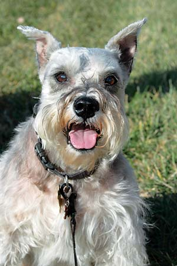

Last year’s pet food contamination scare has many people wary of what’s in their best friends’ food. The good news is that there are safe, less-processed alternatives out there for both daily feed and in-between snacks. Here are a few dog treats that are not only tasty, but healthy too. Our panel of canine judges (see Image Gallery) rated each on a scale of one (yummy) to five (delicious!) paws.
These little fish-shaped cookies were a big hit, even without preservatives, salt, corn or wheat. Salmon and evening primrose oils rich in omega-3 fatty acids are touted to relieve itchy winter skin.
Five Paws
We asked our judges for comments on these chicken-flavored cookies, but all we got was crunching. Made with chicken, barley, peas and brown rice (all organic); also available in peanut butter flavor.
Four Paws
Not only can you reward your dog with a corn- and wheat-free organic cookie, you can also make him famous! Upload your dog’s photo on the company’s Web site for a chance to be featured on the bags. Three Paws
For the pampered pooch, Organic Doggy Kitchen bakes your order fresh prior to shipping. Sophisticated flavors include peanut butter biscotti and apple cinnamon molasses. Vegetarian options are available. Three Paws
Our judges tested Uneek’s Pizza Crust and Beagle Bites. And because they’re made with human-grade ingredients, such as organic oregano and tomato sauce, a few editors joined in the fun. (Not bad!) Three Paws
|
ALISON ROGERS Bob Dog, best friend of K.C. Compton, editor in chief of Grit Magazine, Capper’s Magazine, Herb Companion and Herbs for Health. |
OSCAR "HANK" WILL Clover, best friend of Grit Magazine editor Hank Will. |
 ALISON ROGERS J.C., best friend of Mother Earth News Assistant Editor Heidi Hunt. |
|
ALISON ROGERS Boots, best friend of Mother Earth News Assistant Editor Heidi Hunt. |
OSCAR "HANK" WILL Gus, best friend of Grit Magazine editor Hank Will. |
OSCAR "HANK" WILL Lucy, best friend of Grit Magazine editor Hank Will. |
|
CHERYL LONG Mr. Bunny, best friend of Mother Earth News Editor in Chief Cheryl Long. |
ALISON ROGERS Scout, best friend of Mother Earth News Assistant Editor Alison Rogers. |
ALISON ROGERS Rito, best friend of Mother Earth News Assistant Editor Alison Rogers. |
|
LINDA SCHUETZ Tre, best friend of Linda Schuetz, Manager of Ogden Publications Customer Service. |
|
|